Explore Coimbra
A Brief History
Coimbra served as Portugal's medieval capital before Lisbon assumed that role and has remained a university city since studies were established here in 1290. The royal palace on the upper town became the university's core, with baroque Joanina Library and colleges stepping down toward the Mondego River. Roman cryptoporticus, the old cathedral, and student fado traditions record how Coimbra linked court politics, Catholic scholarship, and provincial administration in central Portugal.
Attractions Map
Top Sights & Activities
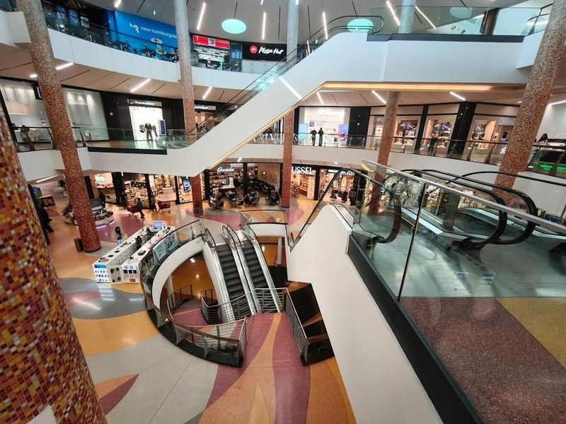
Forum Coimbra
Forum Coimbra is a vibrant shopping destination located in the historic city of Coimbra, near Santa Clara. This modern mall boasts over 140 shops, a Carrefour hypermarket, 27 restaurants, and a six-screen cinema. Its contemporary architecture and spacious terraces offer travellers an excellent view of the charming city and the Mondego River. The mall provides a unique experience with its late-night shopping hours until 12:30 AM.
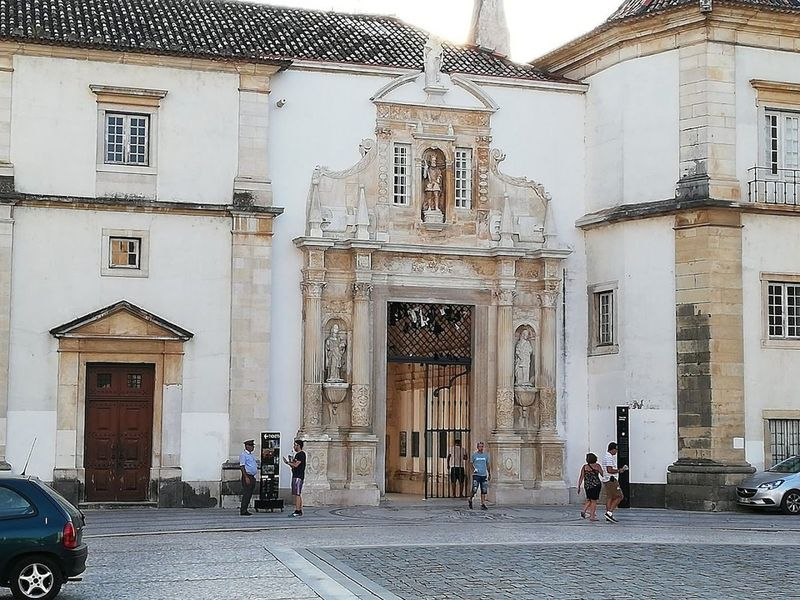
Praça da República
Just a brief stroll from the roundabout leads you to Praça da República, a vibrant hub in Coimbra. This lively square is encircled by an array of bars and restaurants, making it the perfect place to enjoy a leisurely lunch, dinner, or drinks with friends. As a university town, Coimbra thrives here at Praça da República, where the energy and excitement of student life come alive!.
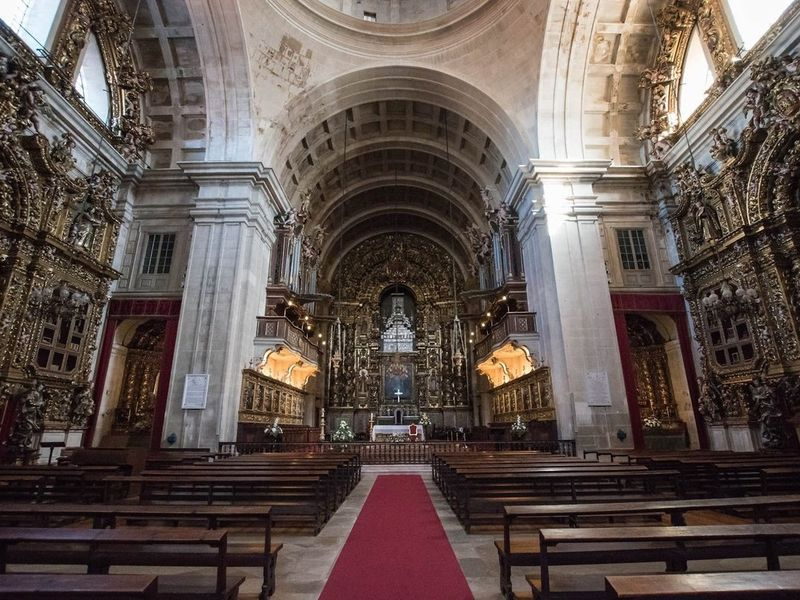
New Cathedral of the Holy Name of Jesus (Coimbra)
The New Cathedral of the Holy Name of Jesus in Coimbra is a 17th-century Catholic cathedral that showcases a blend of Mannerist and Baroque styles in its facade and interior. Originally built as a Jesuit church over a century, it was designed by architect Baltazar Alvares, drawing inspiration from Lisbon's Mosteiro de Sao Vicente de Fora. After the expulsion of the Jesuits, it became vacant until it was designated as the new cathedral in 1772.
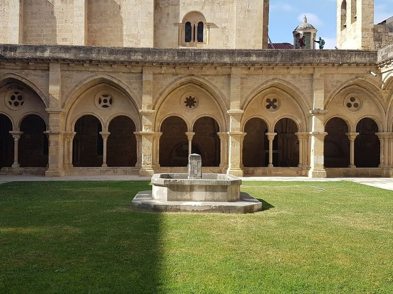
Old Cathedral of Saint Mary of Coimbra
The Old Cathedral of Saint Mary of Coimbra is a remarkable example of Romanesque architecture, built in the 12th century during a time when Portugal was under threat from the Moors. Its fortress-like appearance with high, crenellated walls reflects this historical context. The cathedral's main portal and facade are particularly striking, especially in the warm evening light. Inside, travellers can admire an ornate late-Gothic retable and a beautiful 13th-century cloister.
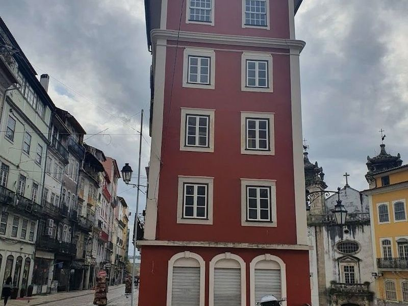
Barbican Gate
Barbican Gate, also known as Porta de Barbaca or Porta e Torre de Almedina, is the main entrance to the Nucleus of the City Wall of Coimbra's old city. This well-preserved structure dates back to the Islamic era and features a sculpture of the Virgin, the national coat of arms, and symbols representing the city's foundation.
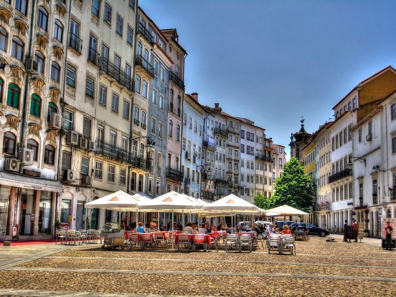
Praça do Comércio
Praça do Comércio is a charming square located between Ferreira Borges and the river in Coimbra. The area around it is filled with narrow alleys housing unique stores offering a variety of items, from local soccer club jerseys to agricultural tools. The square itself is an elongated plaza surrounded by tall townhouses, with the historic Igreja de Sao Tiago situated at its northern end.
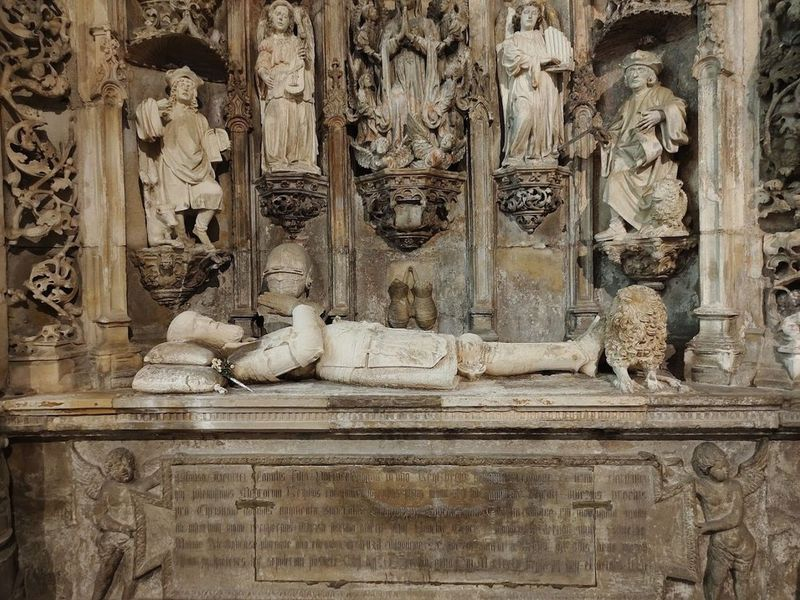
Santa Cruz Church
Santa Cruz Church, also known as Santa Cruz Monastery, is a historic Catholic parish church in Portugal with significant royal and religious importance. The 12th-century Romanesque structure houses the mausoleum of Portugal's first king, Afonso Henriques, and his successor Sancho. The monastery features intricate Manueline-style architecture on its facade and beautifully tiled cloisters.
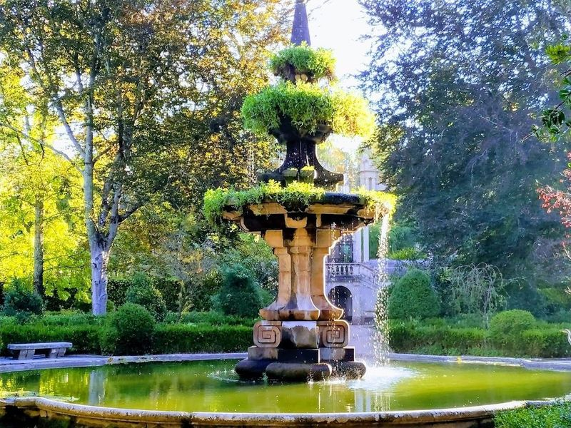
Jardim Botânico da Universidade de Coimbra
Nestled within the historic University of Coimbra, the Jardim Botânico da Universidade de Coimbra is a botanical garden that dates back to 1537. This elegant oasis features meticulously arranged formal flower beds, impressive fountains, and greenhouses filled with tropical plants. Nature lovers will find this enchanting space a must-visit destination in Coimbra, as it offers an array of diverse plant species from around the globe—all without any admission fee!.
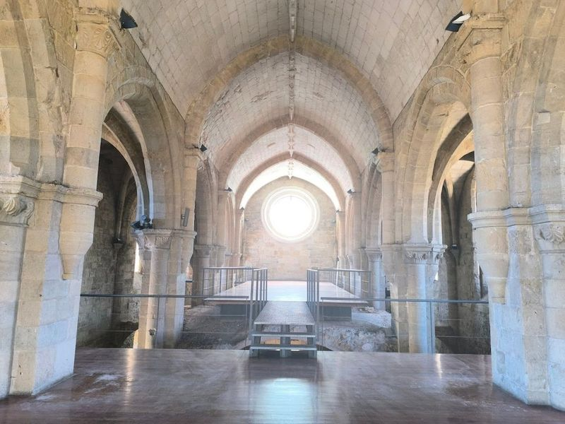
Mosteiro de Santa Clara-a-Velha
Mosteiro de Santa Clara-a-Velha is an impressive archaeological site featuring the Gothic ruins of a 1300s monastery, along with a travellers center. The monastery, located near the Mondego River, was abandoned and neglected for over 300 years, resulting in well-preserved yet partially submerged ruins. travellers can explore the hulking remains, including crumbling cloisters and a dilapidated bell tower that now hosts music concerts and events.
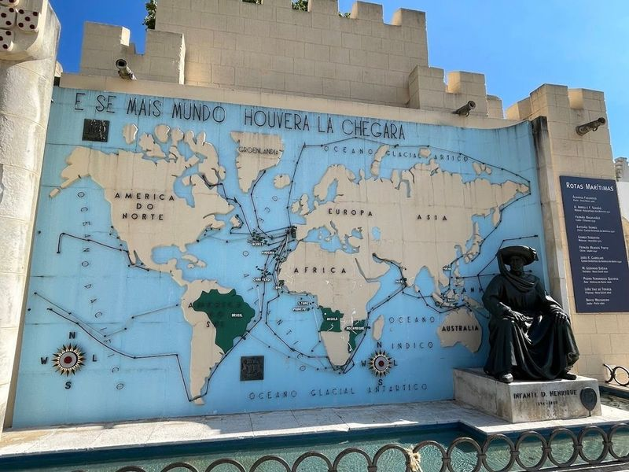
Portugal dos Pequenitos
Portugal dos Pequenitos is a theme park in Coimbra, Portugal that offers a unique experience for families and travellers of all ages. The park features a miniature global village and a costume museum, as well as an exhibition of Barbie dolls. travellers can explore the miniature replicas of famous landmarks from around the world and learn about different cultures in an interactive and educational way.
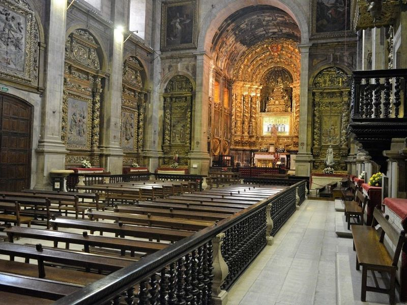
Monastery of Santa Clara-a-Nova
The Monastery of Santa Clara-a-Nova, a gothic monastery dating back to the 1300s, was abandoned due to flooding. The new convent was built in the 17th century to replace the old one. It features tours of the ruins and excavated artifacts. Located in Coimbra, travellers can explore other nearby attractions such as the Cryptoporticus of Aeminium, Capela do Tesoureiro, and the Machado de Castro National Museum.
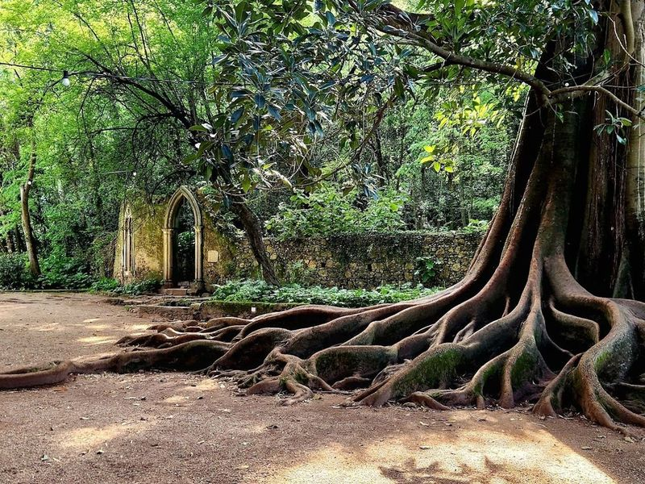
Jardins da Quinta das Lágrimas
Nestled just outside Coimbra, the Jardins da Quinta das Lágrimas is a historic 12-hectare garden that beautifully marries nature with rich Portuguese history. This enchanting space features a medieval fountain and lush greenery, making it an ideal spot for leisurely strolls or family outings. The gardens are steeped in the poignant love story of Prince Pedro and Ines de Castro, whose tragic romance adds an air of mystique to your visit.
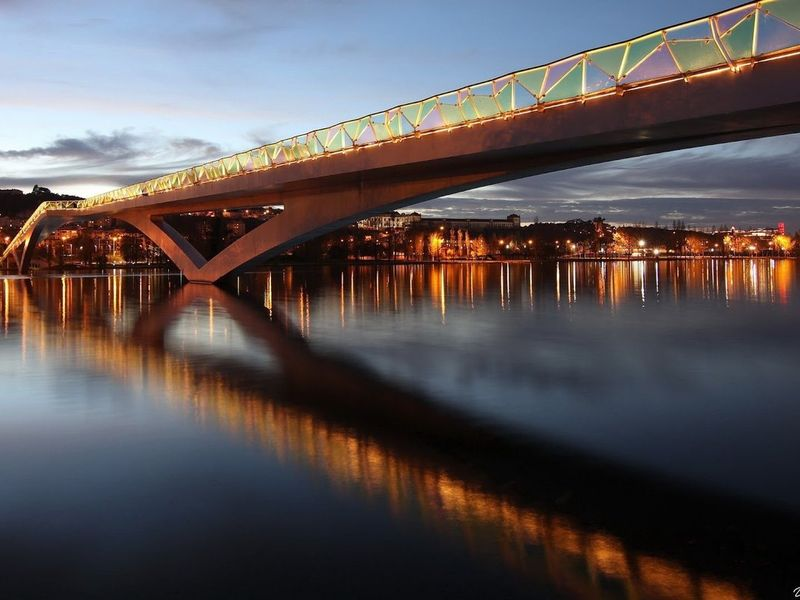
Ponte Pedonal Pedro e Inês
Ponte Pedonal Pedro e Inês, also known as the Pedro and Ines Bridge, is a modern architectural marvel that spans 180 meters across the Mondego River in Coimbra. This innovative footbridge offers views of the river and leads to the picturesque Mondego Green Park. The bridge's colorful railings and unique design make it a popular attraction for both locals and tourists.
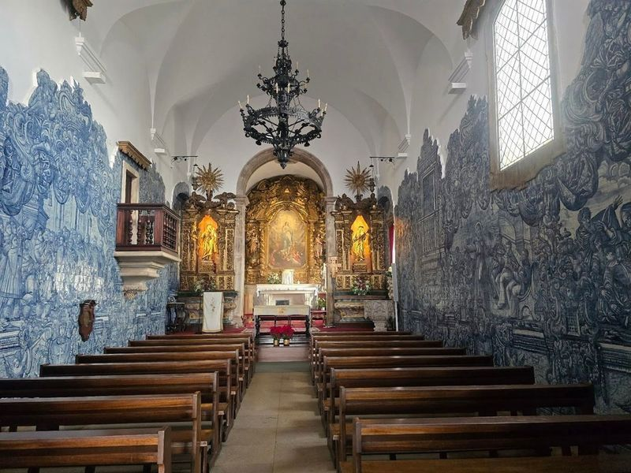
Church of Santo António dos Olivais
The Church of Santo António dos Olivais has a rich history dating back to the 13th century when it was originally dedicated to Egyptian saint Santo Antao. Later, it was rededicated to Saint Anthony after the founding of the Order of the Friars Minor. The current building and its tiles inside, depicting the life of Santo Antonio, date back to the 18th century. travellers can explore where St.